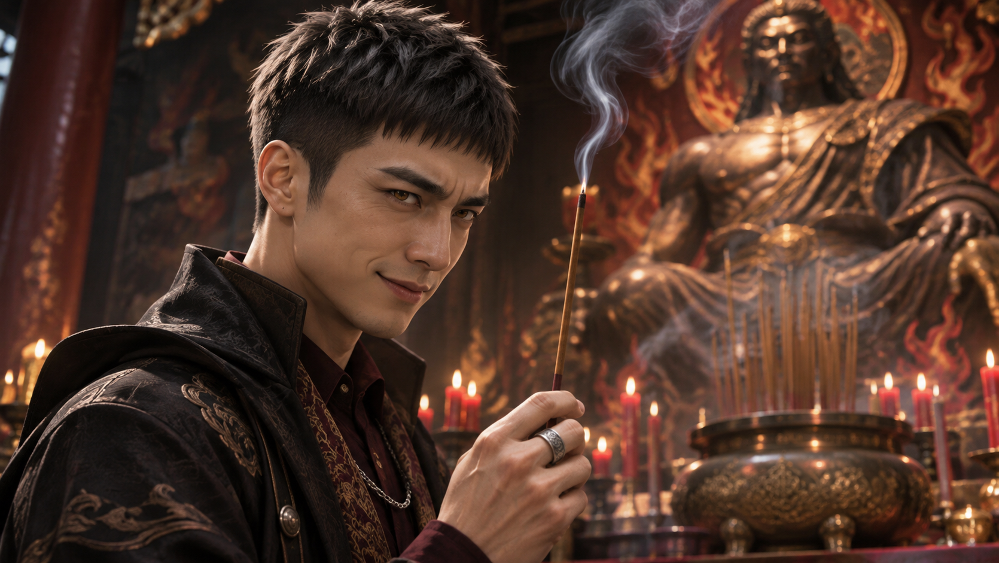
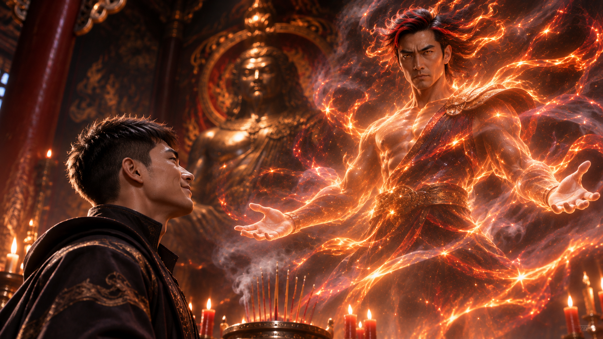
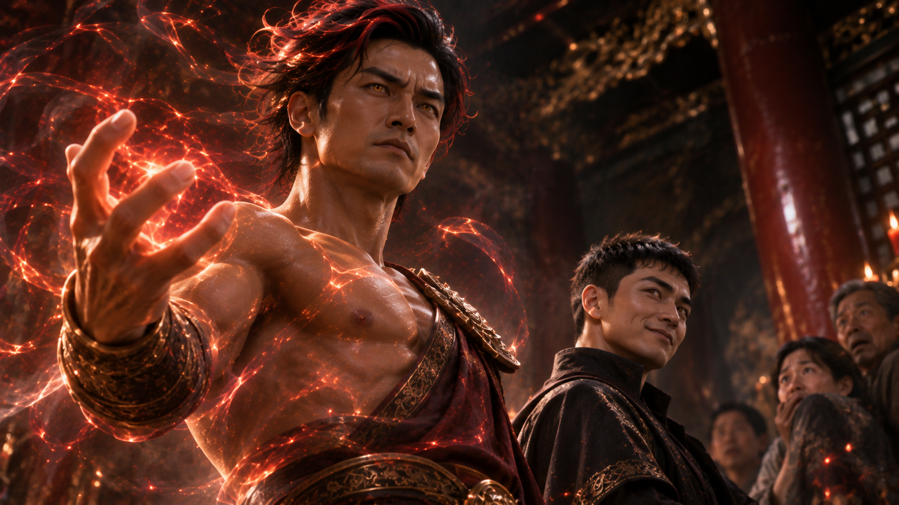
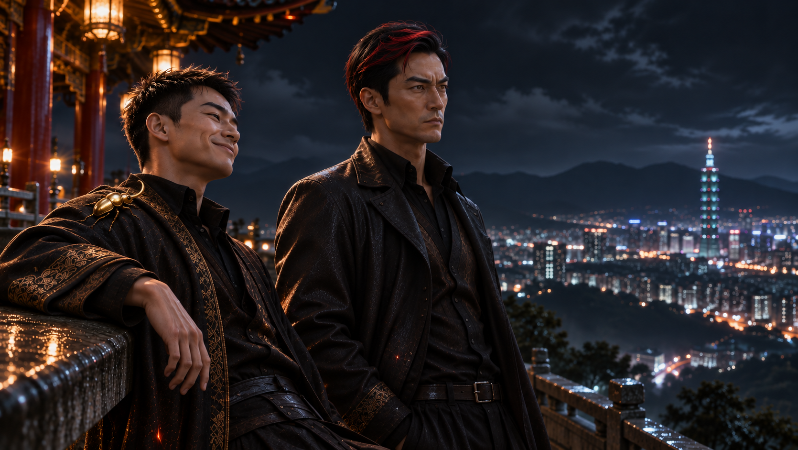
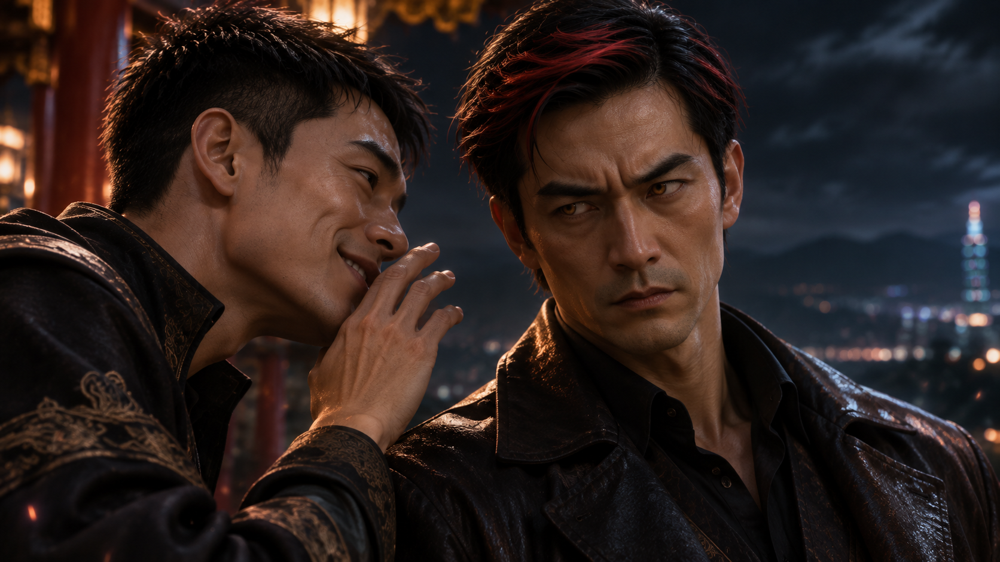
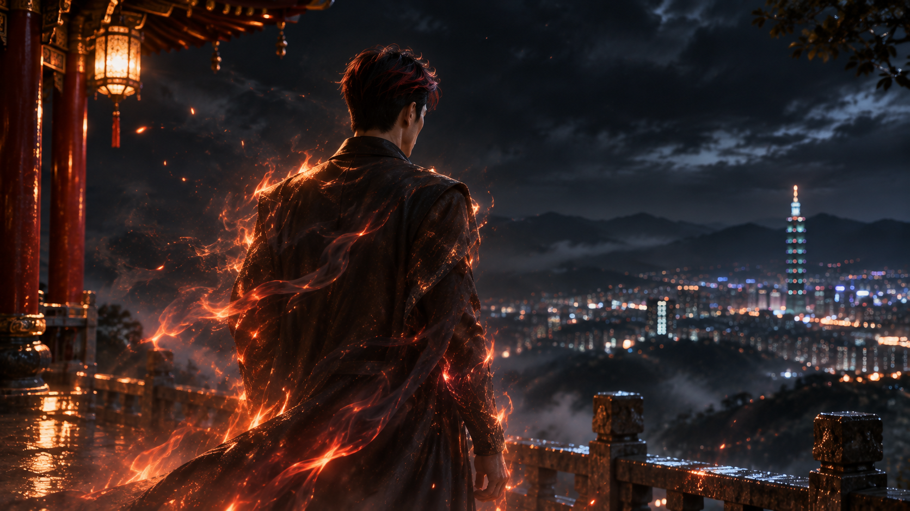

WHITE MAGIC ART STUDIO
序章
炎君廟
細雨綿綿。
低沉厚重的烏雲籠罩著陽明山，蜿蜒的山路隱沒在濃濃霧氣之中。
一輛汽車緩緩駛過潮濕的山道，穿越一座又一座昏暗的隧道，最後停在一座古老的廟宇前。
廟門上方，掛著一塊略顯斑駁的匾額。
炎君廟
車門打開。
一名身穿連帽外套的男子走下車，撐起雨傘，漫不經心地朝廟裡走去。
廟宇的格局並不複雜。
兩側牆壁繪滿傳統風格的壁畫，畫中盡是熊熊烈焰、翻騰的火海，以及與火焰有關的神話景象。
正中央的神龕裡，供奉著一尊威風凜凜的男子塑像。
供桌上擺滿祭品，香爐裡的線香緩緩燃燒，裊裊白煙瀰漫在昏暗的廟堂之中。
幾名剛上完香的男子正準備離開。
他們留著平頭，手臂上布滿刺青，神情粗獷，怎麼看都不像一般前來祈福的信眾。
就在這時，連帽男子走上前。
他隨手從香爐裡抽出一炷尚未燃盡的香，雙手合十，閉上眼睛，擺出一副虔誠的模樣。
然而，他的嘴角卻悄悄勾起一抹戲謔的笑容。
「我希望……」
男子故意拉長語調。
「我們尊貴的炎君大人，別再偷懶了。」
他微微歪頭。
「該醒醒啦～」
話音剛落。
嗡——
廟宇深處，忽然傳來一陣低沉的震動。
牆上的壁畫微微顫抖，供桌上的祭品跟著晃動。
男子手中的線香猛然竄起火光，火勢瞬間吞沒整炷香，轉眼便化為灰燼。
「呵……」
男子緩緩睜開雙眼。
那抹笑意變得更加濃厚。
與此同時，他原本的瞳孔，竟逐漸染上一層枯葉般的黃褐色。

下一秒——
轟！
神龕四周猛然竄出熊熊烈焰！
火焰沿著神像盤旋而上，宛如數條靈蛇，在半空中交錯舞動。
原本寂靜的廟堂，頓時被炙熱的火光照亮。
那些火焰逐漸匯聚，凝結出一道高大的身影。
一名男子，就這樣懸浮在神像前方。
他的五官與神像幾乎一模一樣，壯碩的身軀籠罩在烈焰之中，細碎的火星不斷從身上飄落。
那雙緊閉的眼睛，緩緩睜開。
黃褐色的瞳孔，冷冷地注視著下方的來人。
而站在地上的連帽男子，也正以同樣顏色的眼睛回望著他。

「一睡就是十年啊……炎君大人。」
男子輕浮地笑了。
「哦？還是應該叫你……」
他故意停頓。
「張國豪先生？」
懸浮在半空中的男人微微低頭。
他望著眼前的來人，眼神冰冷，沒有絲毫喜悅。
「……曾永華。」
「哎呀，不錯嘛！」
永華笑著攤開雙手。
「睡了十年，記憶力還沒衰退。」
就在這時，一抹細小的金色光澤，忽然從他的衣領間閃過。
一隻約莫半個手掌大小的甲蟲，正緩緩沿著他的肩膀爬行。
牠的外殼呈現奇異的金黃色，表面光滑得宛如精心打磨過的金屬，在廟堂的火光映照下，泛起淡淡的光澤。
永華似乎早已習慣牠的存在。
他伸出食指，輕輕撫過甲蟲的背部，任由牠慢慢爬回自己的衣領。
隨後，他忽然朝旁邊使了個眼色。
「不過，阿豪。」
「嗯？」
「你好像嚇到人家了。」
炎君順著他的視線望去。
廟堂的石柱後方，那幾名剛才還在上香的男子，此刻正驚恐地縮成一團。
他們臉色慘白，渾身顫抖，目光死死盯著半空中的炎君。
誰也沒想到，自己剛才參拜的神明，竟然真的出現在眼前。
炎君皺起眉頭。

「嘖……」
他不耐煩地抬起手。
「真麻煩。」
指尖輕輕一揮。
一道烈焰猛然掠過廟堂，將石柱後方的幾人吞沒。
驚呼聲戛然而止。
待火光散去，原本躲在那裡的身影已經消失，只剩焦黑的地面與空氣中尚未散去的熱浪。
炎君緩緩放下手。
彷彿剛才只是隨手清理了一件礙眼的東西。
「哇喔。」
永華挑起眉毛。
「你還是這麼狠啊。」
他笑著搖頭。
「這樣下去，那位『大人』可不會滿意喔。」
曾永華身材修長，身高超過一百八十公分，俊俏的五官搭配一雙總帶著笑意的眼睛，讓他看起來頗有魅力。
然而，那份笑容之下，卻藏著令人難以捉摸的惡意。
他似乎總能從別人的恐懼與不安之中，找到某種樂趣。
與他相比，炎君的外貌顯得更加粗獷。
濃眉大眼，輪廓深邃，黝黑的皮膚與壯碩的身材，使他即使一言不發，也帶著強烈的壓迫感。
火焰在他的肩膀與手臂間緩緩流動。
那雙黃褐色的眼睛，始終沒有流露任何情緒。
「無關的人，沒必要留下。」
炎君淡淡地回答。
「我只是在幫你省麻煩。」
永華聳聳肩。
「行啦，隨便你。」
他轉身望向廟門。
「雨好像停了。」
隨後，回頭露出笑容。
「走吧，出去聊聊。」
廟外・山巒之巔
雨後的陽明山，瀰漫著潮濕的水氣。
厚重的雲層逐漸散開，遠方城市的燈火，在薄霧中若隱若現。
炎君與曾永華站在廟旁的丘陵高地，俯瞰山下繁華的都市。

「真沒想到啊……」
永華雙手插在口袋裡，望著遠方。
「你竟然在這種地方窩了十年。」
他轉頭看向炎君，忍不住笑了。
「而且還有人幫你蓋廟？」
炎君冷哼一聲。
「人類，真是愚蠢。」
「喔？怎麼說？」
「十年前，我不過隨手殺了一頭野獸，剛好救了一個權貴。」
炎君望著山下的城市。
「結果那群蠢貨竟然把我當成神明，還給我取了個『炎神君』的名號。」
永華聽完，忍不住笑了出來。
「哈哈哈！原來是這樣！」
他搖了搖頭。
「這也太有意思了吧。」
炎君沒有回應。
永華從口袋裡掏出一盒香菸，抽出一根叼在嘴邊。
接著，朝炎君湊了過去。
「欸，阿豪。」
「幹什麼？」
永華指了指嘴裡的香菸。
「幫個忙？」
炎君瞥了一眼。
下一秒，香菸前端自行燃起一點火光。
縷縷青煙緩緩升起。
永華深吸一口，滿意地吐出煙霧。
「謝啦。」
他望著遠方，嘴角帶著笑意。
「說真的，我承認人類很蠢。」
「不過嘛……」
他彈了彈指間的香菸。
「他們其實也挺有趣的。」
炎君沒有說話。
永華繼續說：
「你知道嗎？我現在可是個頗有名氣的演員。」
他得意地笑了。
「走到哪裡都有粉絲，現在出門還得易容呢！」
說著，他忽然感覺到領口傳來一陣細微的搔癢。
那隻金色甲蟲不知何時又爬了出來，正沿著外套的領緣緩緩移動。
「哎呀，你也同意我是嗎？」
永華輕笑一聲，伸出手指，任由甲蟲爬上指尖。
他漫不經心地撫摸著牠光滑的背甲，彷彿正在逗弄一隻心愛的寵物。
炎君瞥了他一眼。
「呵，荒唐。」
「哎呀，你不懂啦。」
永華毫不在意地笑了笑。
然而，下一瞬間，他的語氣忽然變了。
「不過……」
他將香菸移開嘴邊。
「說點正經的。」
炎君轉頭看向他。
永華臉上的笑意逐漸收斂。
「那位『大人』……」
他稍微停頓。
「又開始製造『樂園之花』了。」
炎君的眉頭猛然皺起。
「什麼？」
他轉過身。
「不可能！」
永華沒有回答。
炎君的眼神變得更加陰沉。
「二十年前，他不是已經放棄那個計畫了嗎？」
「是啊。」
永華緩緩吐出一口煙。
「本來是這樣沒錯。」
他轉頭望向炎君。
「不過，現在情況不同了。」
「什麼意思？」
「他遇上了一個百年難得一見的黑女巫。」
永華微微一笑。
「而那個女人，告訴了他『樂園之花』的材料。」
炎君皺眉。
「什麼？」
永華沒有立即回答。
他望向遠方的城市，隨後壓低聲音，緩緩念出一段詩句。
「至尊美麗但在哭泣的花朵啊……」
他停頓片刻。
「你的第一顆種子，將成為我的核、我的心……」
山風吹過。
炎君沉默了。
永華看著他的反應，嘴角再次揚起。

「怎麼樣？」
他輕笑一聲。
「聽出什麼了嗎？」
炎君沒有回答。
永華便自顧自地繼續說：
「這首詩，說的可不是普通的花。」
他轉頭望向炎君。
「而是人類。」
炎君的目光微微一凝。
永華露出笑容。
「而且……」
他刻意放慢語速。
「是聖術師。」
炎君皺起眉頭。
「你怎麼這麼確定？」
「哎呀，阿豪。」
永華笑著搖頭。
「這就是你跟我的差別。」
他伸出手指，輕輕點了點自己的太陽穴。
「我有的是人脈。」
「各種小道消息，隨手就能拿到。」
他得意地笑了笑。
「再說，我的直覺一向很準。」
「而且……」
永華稍微停頓。
「我已經大致知道線索在哪裡了。」
炎君冷冷地盯著他。
「所以，你想讓我怎麼做？」
永華聳聳肩。
「很簡單啊。」
他露出理所當然的笑容。
「照我的話去做就行了。」
炎君的臉色瞬間沉了下來。
周圍的空氣彷彿跟著升溫。
「曾永華。」
他一字一頓地說。
「沒有人能命令我！」
永華卻絲毫沒有退縮。
反而笑得更加開心。
「哎呀，別這麼傲慢嘛，阿豪。」
他輕輕搖頭。
「別忘了，我們的存在，可都是那位大人的恩賜。」
炎君的目光逐漸冰冷。
永華繼續說：
「我們曾經的人類記憶、身分……」
他望著炎君。
「可全都掌握在他手上。」
炎君沉默了。
他的雙拳緩緩握緊，卻沒有再說話。
永華見狀，忽然笑著拍了拍他的肩膀。
「哎呀！別這麼嚴肅！」
他恢復了原本輕快的語調。
「放寬心一點嘛。」
「過去的記憶，有什麼好留戀的？」
永華攤開雙手。
「你看看現在的自己。」
「力量、自由，還有想做什麼就做什麼的本事。」
他笑著說：
「這樣不是很好嗎？」
炎君沒有回答。
永華收回手，望向遠方。
「擁抱你的力量，享受當下。」
他的笑容逐漸變得邪氣。
「這樣才有趣嘛～」
片刻後，他像是突然想起什麼。
「啊，對了。」
永華轉頭看向炎君。
「關於剛才那首詩……」
他微微瞇起眼睛。
「你應該知道，『至尊』這兩個字，能聯想到誰吧？」
炎君沒有立即回答。
他望著山下的城市，沉思了片刻。
隨後，緩緩開口。
「翼……」
永華微微一笑。
炎君繼續說：
「沒錯！我們國家就有一個符合條件的人。」
他轉頭看向永華。
「而且，照你這麼說……」
炎君皺起眉頭。
「他的『種子』，已經上小學四年級了？」
永華笑著點頭。
「沒錯。」
炎君的神情變得更加陰沉。
「如果真的是那個人……」
他停頓片刻。
「我們四魔君之中，應該有一個人，比我更適合去對付他吧？」
永華聽見這句話，臉上的笑容忽然變得有些微妙。
「這個嘛……」
他聳聳肩。
「暫時先不談那個。」
炎君冷冷地看著他。
永華繼續說：
「那位大人不希望他牽涉進這次行動。」
「為什麼？」
「好像跟某個誓約有關。」
永華不耐煩地擺了擺手。
「總之很麻煩啦。」
炎君冷哼一聲。
「真是諷刺。」
永華沒有接話。
他望向遠方的城市，嘴角再次勾起笑容。
「好了，阿豪。」
他轉身準備離開。
「別再讓那些人類膜拜你了。」
炎君看著他的背影。
永華停下腳步，微微側過頭。
「你根本不需要那種東西。」
他咧嘴一笑。
「你只需要——」
山風吹起他的外套。
「盡情地破壞！」
話音落下。
永華頭也不回地離開。
那隻金色甲蟲緩緩爬上他的肩頭，在夜色中映出一抹微弱的金光。
永華伸手輕輕碰了碰牠。
炎君仍站在原地，靜靜俯瞰山下的城市燈火。
他的眼神深處，浮現出幾分難以言喻的情緒。

憤怒。
空洞。
以及一絲連他自己都不願承認的疑惑。
下一秒——
轟！
烈焰猛然從他腳下竄起。
高大的身影瞬間化作一團熊熊火光，隨著山風消散在漆黑的夜色之中。